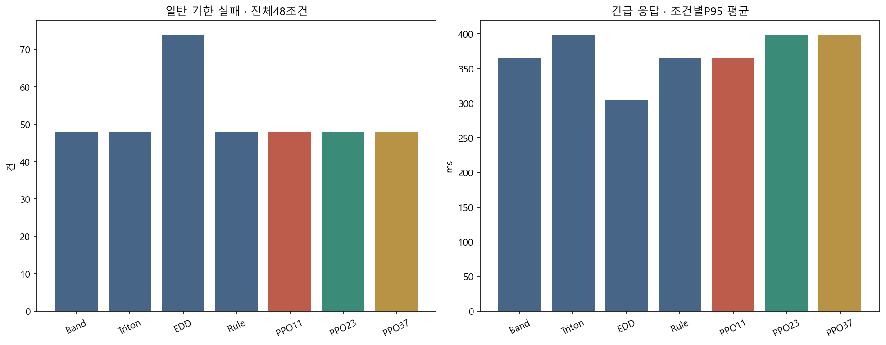
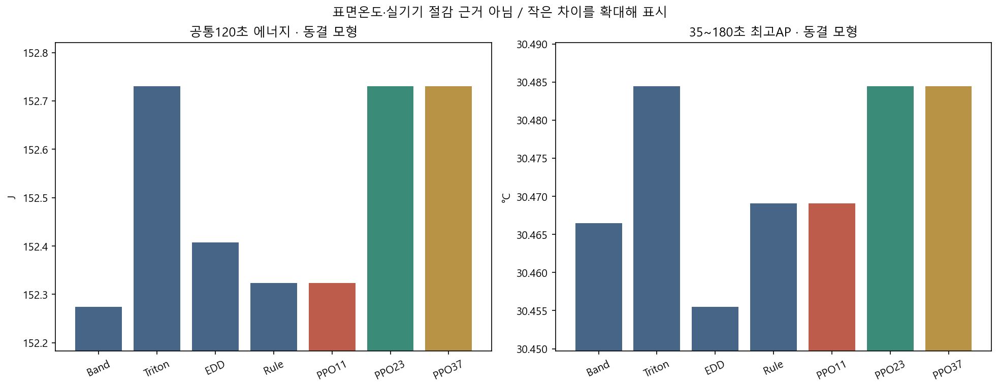
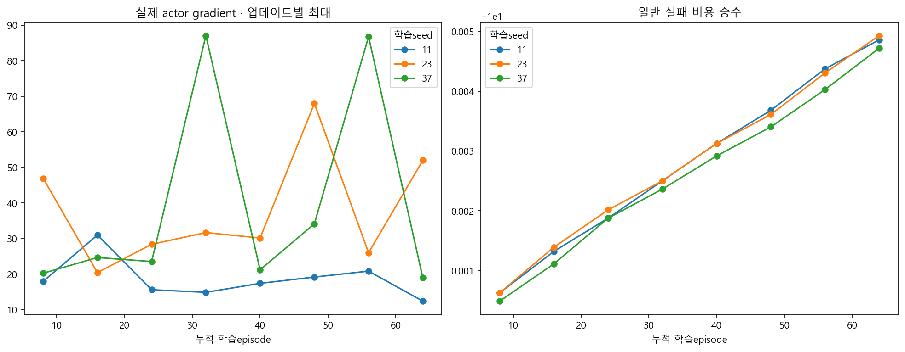
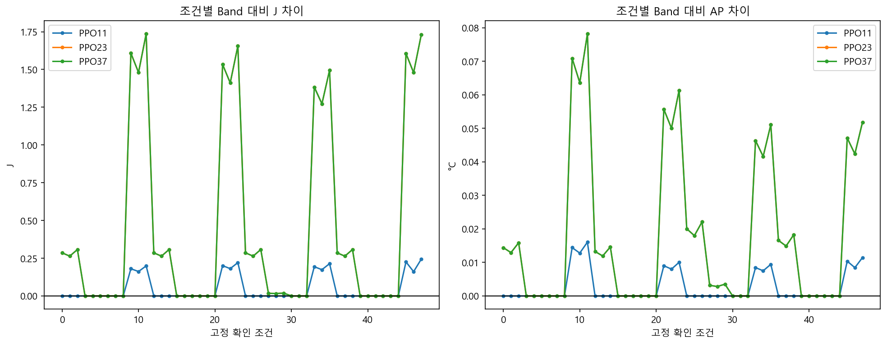
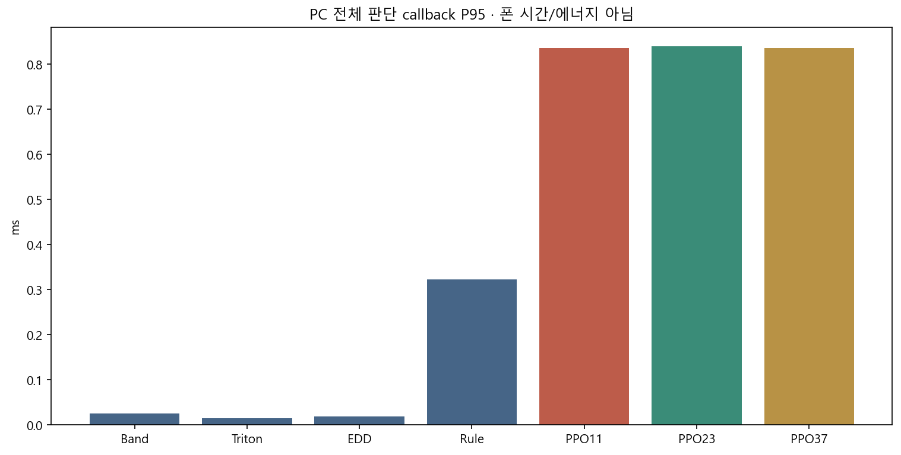

세 PPO 모두 원 strict FAIL · 새 채택0.
791환경/192학습 · A24 3seed 각64 · S26 감사/adapter만, 학습0 · 기기/ADB0.
작은 모형 파일럿. 수렴·실기기 절감·표면온도 개선을 입증한 결과가 아닙니다.
| 정책 | 완료/예정 | 일반 실패 | P95 ms | J120 | 최고AP |
|---|---|---|---|---|---|
| Band | 3168/3168 | 48 | 364.456 | 152.274374 | 30.466456 |
| Triton | 3168/3168 | 48 | 398.925 | 152.729969 | 30.484420 |
| EDD | 3168/3168 | 74 | 304.797 | 152.407289 | 30.455501 |
| Rule | 3168/3168 | 48 | 364.456 | 152.323438 | 30.469080 |
| PPO11 | 3168/3168 | 48 | 364.456 | 152.323438 | 30.469080 |
| PPO23 | 3168/3168 | 48 | 398.925 | 152.729969 | 30.484420 |
| PPO37 | 3168/3168 | 48 | 398.925 | 152.729969 | 30.484420 |
P95는 조건별P95 평균. 모델 AP/J와 실제 폰 계측을 구분합니다.





| 조건 | 부하/문맥 | 정책 | 완료/예정 | 긴급실패 | 일반실패 | P95 ms | J | AP °C |
|---|
한국어보고 · 원장/SHA 검증 · 전체CSV · S26 미해결gate